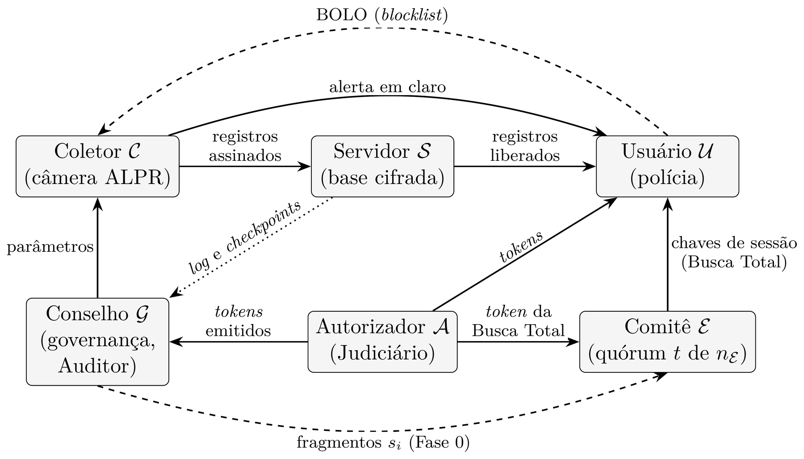

Nêmesis
Seguir um carro deve ser barato. Seguir todos, inviável.
Implementação de sistema de monitoramento de tráfego resistente à vigilância em massa. O Nêmesis cifra cada leitura de placa na própria câmera: abrir um registro custa computação, e o custo cresce com cada registro aberto. Como a deusa grega da justiça retributiva, faz o excesso custar na medida do excesso.
1O problema
Câmeras de leitura automática de placas (ALPR) registram a placa, o local e o horário de todos os veículos que passam, suspeitos ou não. Reunidos numa base central, esses registros reconstroem trajetos e rotinas de qualquer motorista: é a vigilância de arrasto.
2A proposta
- Adapta as Crypto Crumple Zones (Wright e Varia, 2018) ao monitoramento veicular.
- A câmera cifra a placa (AES-256-GCM) com uma chave derivada de um segredo k em [0, N) e descarta k; a placa em claro não sai do equipamento.
- Ler um registro exige testar candidatos a k: em média (N+1)/2 tentativas.
- O custo é linear no número de registros abertos e vale para qualquer parte que obtenha a base, inclusive o operador do servidor.
- Cada registro é vinculado à câmera e ao instante (dado associado) e assinado pela câmera (ECDSA P-256).
3Arquitetura

Modalidades de acesso
- BOLO: alerta na câmera, sem puzzle, só daqui em diante, com prazo de 24 h.
- Busca Fechada: placa conhecida; abre registros até achá-la, com orçamento de 500 por token.
- Busca Aberta: placa parcial ou desconhecida; abre a janela inteira.
- Busca Total: token, boletim público e quórum de 4 de 8 do Comitê; abre um mês sem puzzle.
Governança
O Servidor só libera registros com token do Judiciário e grava tudo num log encadeado por hash. O Auditor cruza o que foi autorizado (tokens), liberado (log) e decifrado (declarações da polícia).
4Resultados
Na simulação, quanto menos se sabe sobre o alvo, mais registros de terceiros precisam ser abertos, e o custo acompanha:
| Cenário | Modalidade | Registros abertos | |
|---|---|---|---|
| Veículo procurado em circulação | BOLO | 0 | |
| Veículo identificado | Busca Fechada | 7 | |
| Placa parcial (três caracteres) | Busca Aberta | 9 | |
| Placa desconhecida | Busca Aberta | 30 | |
| Acesso excepcional | Busca Total | 12.735 |
- A razão entre o custo da varredura e o da busca dirigida, cerca de 38 milhões, não depende de N: o papel de N é posicionar os dois custos diante dos orçamentos reais.
- N deve ser calibrado contra o adversário mais eficiente: com N = 10 milhões e código nativo, a varredura anual sairia por US$ 539 mil.
- O dado associado e a assinatura detectam as adulterações feitas por um operador do servidor.
- A câmera quase não paga: cerca de 37 µs e 138 bytes por captura, já com a assinatura.
Barras em escala logarítmica. Tabelas 12, 14 e 19 da monografia. Simulação da Cidade Universitária (OpenStreetMap): 92 câmeras, 120 veículos, 12.735 registros. Custos de busca e varredura numa rede hipotética de 5 mil câmeras, com volumes da CET (mediana de cerca de 2.300 veículos por hora no pico), N ≈ 2,1 bilhões e implementação nativa estimada (0,22 µs por tentativa), a US$ 0,0408 por núcleo-hora.
5Conclusões
- A proporcionalidade das investigações pode ser imposta pela arquitetura, e não apenas por normas: o custo por registro vale mesmo que o Servidor, a polícia, o Judiciário e o Conselho se comportem mal.
- O N uniforme por registro é a política mais adequada como padrão; o amassamento por bloco só se justifica se a previsibilidade do custo por busca for um requisito.
- Limites: a criptografia limita a escala do acesso, não o alvo; a Busca Total reconstrói a chave do mês e depende de proteção institucional.
- Trabalhos futuros: decifragem por limiar com geração distribuída de chaves, calibração de N contra implementações otimizadas, detecção de registros omitidos e controle do BOLO.

Equipe
Engenharia de Computação
Engenharia de Computação
Engenharia de Computação
Orientador: Prof. Dr. Thales Areco Bandiera Paiva